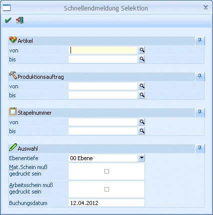

Nach abgeschlossener Fertigstellung eines Halbfertig- oder Fertigproduktes erfolgt die Produktionsendmeldung (Lagerbuchungen werden erstellt, Kostenrechnungszeilen werden erzeugt, usw.). Diese kann entweder im Programmbereich WinLine Produktion Produktion / Produktionsendmeldung pro Projekt durchgeführt oder über den Menüpunkt
1 WinLine PPS
1 Produktion
1 Produktionsschnellendmeldung
für mehrere Projekte gleichzeitig.

Ø Artikel von - bis
Einschränkung auf einen Produktionsartikel der endgemeldet werden soll. Wird eine Einschränkung vorgenommen, dann wird neben dem Eingabefeld die Artikelbezeichnung angezeigt. Durch einen Klick auf die Bezeichnung kann eine Drill-Down-Funktion ausgelöst werden. Welche Aktion dabei ausgelöst wird, kann über die rechte Maustaste festgelegt werden (die letzte Einstellung wird gespeichert), wobei folgende Optionen zur Verfügung stehen:
ü Aufruf Info
Es wird der Artikel
in der Artikelinfo im Programm WinLine INFO geöffnet.
ü Artikelstamm
Der Artikel wird
in der WinLine FAKT im Artikelstamm geöffnet.
ü Statistik
Es wird die
Artikelstatistik in der WinLine FAKT geöffnet.
Ø Produktionsauftrag von - bis
Einschränkung auf ein Projekt das endgemeldet werden soll. Wird eine Projektnummer eingegeben, dann wird neben dem Eingabefeld der Artikel angezeigt, der produziert werden soll. Durch einen Klick auf den Artikel wird ein "Drill-Down" durchgeführt. Über die rechte Maustaste kann eingestellt werden, welche Aktion dabei ausgeführt werden soll, wobei die letzte Aktion gemerkt wird. D.h. wenn das nächste Mal mit der linken Maustaste auf den Link geklickt wird, wird die letzte Aktion wieder ausgeführt. Dabei stehen folgende Optionen zur Verfügung:
ü Produktionsliste
Damit kann
direkt die Produktionsliste aufgerufen werden, wobei es dabei mehrere
Selektionsmöglichkeiten wie "Komprimierte Auswertung", "Detailauswertung",
"Diagramm" oder "Projektauswertung" gibt.
ü Belegmanagement
Mit dieser
Auswahl kann das Belegmanagement in der WinLine FAKT aufgerufen werden. Dies ist
allerdings nur dann möglich, wenn der Produktionsauftrag auch aus der
Auftragsbearbeitung übernommen wurde.
ü Arbeitsschrittstatus
Damit kann
der Arbeitsschrittstatus des Projektes geöffnet werden.
Ø Stapelnummer
Einschränkung auf eine Stapelnummer (von-bis), die endgemeldet werden soll. Der Stapelnummer-Matchcode steht zur Verfügung.
Ø Ebenentiefe
Auswahl, welche Ebene bearbeitet werden soll. Bei der Ebene 0 wird der Hauptartikel produziert, bei der Ebene 1 werden alle Produktionsartikel der 1. Ebene produziert usw.
Projekte können immer in Teilschritten (Ebenen) endgemeldet werden, oder es wird die Fertigstellung aller Ebenen gleichzeitig gemeldet (bei der Auswahl einer Ebene werden immer alle darunterliegenden Ebenen automatisch mitendgemeldet).
Ø Materialentnahmeschein muss gedruckt sein
Ist diese Checkbox aktiv, so kann die Endmeldung nur dann durchgeführt werden, wenn der Mat. Schein bereits gedruckt wurde. Wurde in den PROD Parametern eingestellt, dass der Materialentnahmeschein gedruckt werden sollte, so ist die Checkbox standardmäßig aktiviert. Die Checkbox kann nicht deaktiviert werden, wenn in den PROD Parametern eingestellt wurde, dass der Materialschein gedruckt werden muss.
Ø Arbeitsanweisung muss gedruckt sein
Ist diese Checkbox aktiv, so kann die Endmeldung nur dann durchgeführt werden, wenn die Arbeitsanweisung bereits gedruckt wurde. Wurde in den PROD Parametern eingestellt, dass die Arbeitsanweisung gedruckt werden sollte, so ist die Checkbox standardmäßig aktiviert. Die Checkbox kann nicht deaktiviert werden, wenn in den PROD Parametern eingestellt wurde, dass die Arbeitsanweisung gedruckt werden muss.
Ø Buchungsdatum
Hier kann das Datum eingegeben werden, mit dem die Buchungen im Artikeljournal durchgeführt werden sollen. Standardmäßig wird immer das Auswertedatum der WinLine vorgeschlagen.
Nach Bestätigung mit O.K. gelangt man in ein 2. Fenster Schnellendmeldung, in dem alle der zuvor vorgenommenen Selektion entsprechenden Projekte angezeigt werden.